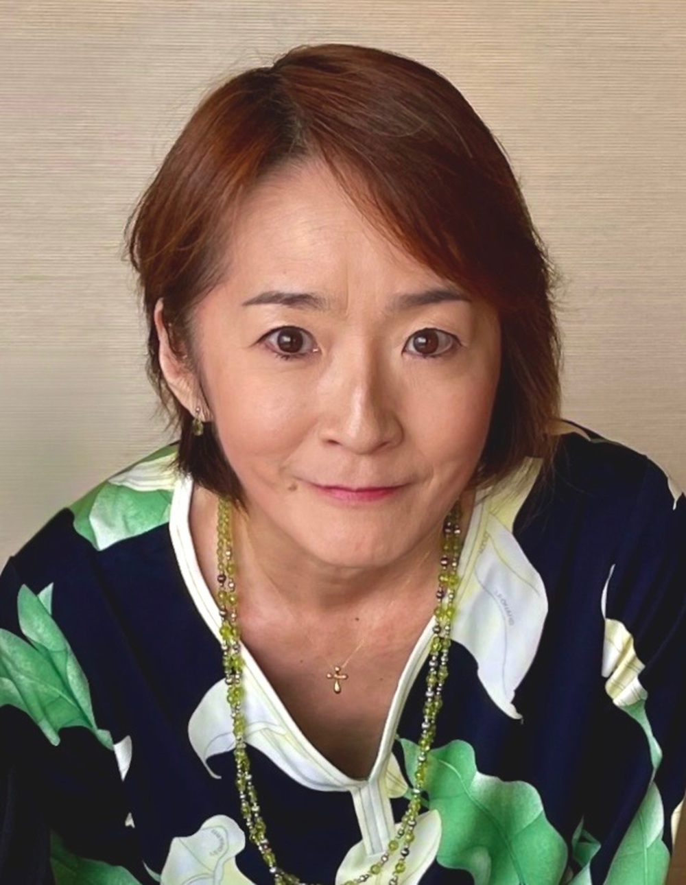

About Me
花、食、言葉、犬との暮らし。
一見すると別々のものに見えますが、
私の中ではすべて繋がっています。
料理も、花も、ワインも、英語も、
人の暮らしを少し豊かにするためのもの。
Hiromi's Gardenは、
そんな日々の発見や学びを記録する小さな庭です。
1967年11月2日 東京生まれ。
成城大学 英文科卒業。
幼少期の頃はアメリカ、テネシー州、ナッシュビルで2年を過ごしました。
その経験は英語だけではなく、味覚や色彩感覚、
インターナショナルな視点にもつながっていると感じています。
花は母の影響で草月流の華道を始めたのがきっかけで、
父の影響でガーデニングにも親しみました。
料理は、中華料理教室をきっかけに深く学び、調理師免許を取得。
ワインは家族との食卓から親しみ、2003年にソムリエの資格を取得しました。
愛犬LUCAとの暮らしは、私にとって癒しであり、
毎日を整える大切な存在です。
小さな命と向き合う時間は、仕事にも通じる思いやりを育ててくれました。

Qualifications & Experience
Food & Wine
調理師、ソムリエ
Flower
草月流華道師範3級、フラワーアレンジメントデザイナー
Languages
英語での接客・コミュニケーション、中国語での接客経験、新HSK中国語検定3級
Hospitality & Office Work
人事・総務・採用、百貨店での接客販売、秘書検定2級、MOS PowerPoint
Dog Life
いぬ検定中級、愛犬との暮らしを通して、日々のケアや小さな命と向き合う時間を大切にしています。